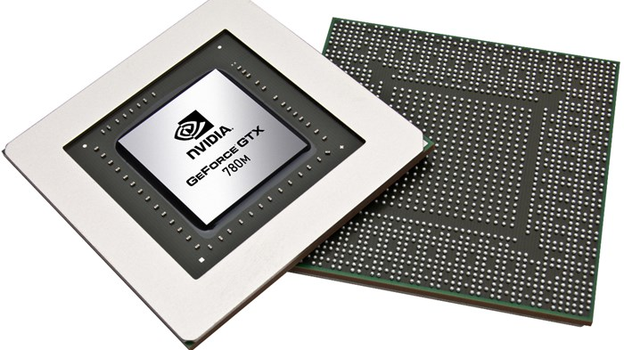

Processadores e chips gráficos
 Visite a páginaQuando queremos fazer aquela melhoria em nosso computador, visando um melhor desempenho nos jogos, essa nossa distraçãozinha do fim-de-semana, a primeira coisa que vem à nossa mente é a troca da placa de vídeo, não é mesmo? Mas há um costume, na verdade, um vício da linguagem técnica de leigos, de levar em consideração apenas a quantidade de memória da placa de vídeo como O diferencial de desempenho.